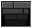

Hints
 Stairs for transport
Glass, that can be break by pressing 'Space'
Gold Key, so you can open Wooden Doors
Skeleton Key, so you can open Stone Doors
 Quests, once you reach them, press 'Space', to unmask hidden keys
Quests, once you reach them, press 'Space', to unmask hidden keys
Wooden Door
Stone Door
Stairs to level up
'Space' is the Key in this game, you use it to open doors, break glass, get in stairs and so on.
You can't level up if you don't have all the doors opened
Beware of Zombies, try not to reach them.
Good Luck
Glass, that can be break by pressing 'Space'
Gold Key, so you can open Wooden Doors
Skeleton Key, so you can open Stone Doors
Quests, once you reach them, press 'Space', to unmask hidden keys Wooden Door
Stone Door
Stairs to level up
'Space' is the Key in this game, you use it to open doors, break glass, get in stairs and so on.
You can't level up if you don't have all the doors opened
Beware of Zombies, try not to reach them.
Good Luck